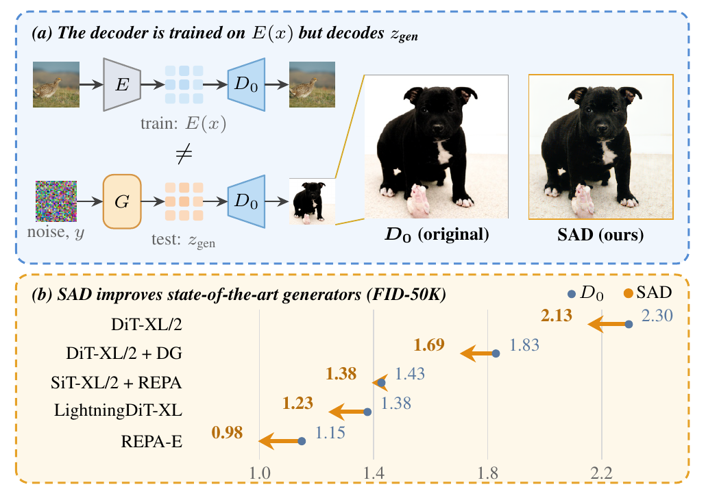
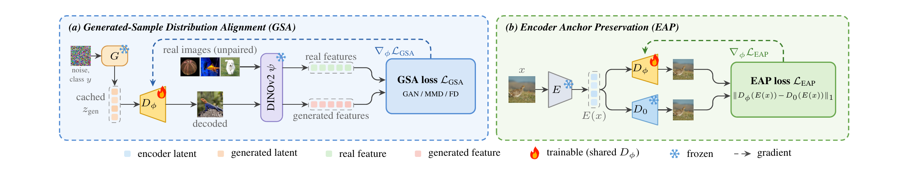

Results on ImageNet 256×256

1.15 → 0.98
FID-50K, REPA-E
1.38 → 1.23
FID-50K, LightningDiT
2.30 → 2.13
FID-50K, DiT-XL/2
−32%
FID, PixArt-α text-to-image

TL;DR. The decoder of a latent generative model is trained only on encoder latents, but at test time it decodes generated latents. SAD fine-tunes only the decoder on the generator's own samples and improves every generator we tested, at no inference cost.
Latent generative models synthesize images by decoding generated latents, yet their decoder is trained only to reconstruct encoder latents and never sees the latents it decodes at test time. This train–test mismatch renders the residual errors of the generator directly into the final image. The decoder is the most direct and least expensive place to correct them, but doing so faces two core challenges: (1) unpaired supervision, since a generated latent has no ground-truth image, and (2) latent-space drift, since a decoder freed from paired targets forgets the latent space it must keep decoding.
To address them, we propose Sample-Aligned Decoders (SAD), a post-training framework that fine-tunes only the decoder of a frozen generator at no inference cost. It consists of two modules: Generated-Sample Distribution Alignment, which matches decoded generated latents to unpaired real images in a frozen foundation-model feature space, and Encoder Anchor Preservation, which keeps the decoder close to the original one on encoder latents. Our analysis shows that the alignment must act on generated latents, where the correction is weighted by the density ratio between generated and encoder latents; on encoder latents it can only work against the anchor. Extensive experiments show that SAD consistently improves four state-of-the-art ImageNet generators (DiT-XL/2, SiT-XL/2 with REPA, LightningDiT and REPA-E) across three tokenizers, complements discriminator guidance, and extends to text-to-image generation.

A one-time cache of generated latents is decoded and aligned with unpaired real images in a frozen DINOv2 feature space (GAN, MMD or Fréchet discrepancy). No generated latent needs a ground-truth image.
An L1 anchor keeps the decoder close to the original decoder on encoder latents, so reconstruction is preserved and the decoder does not overfit the alignment space.
Training takes 2,000 steps, about one GPU-hour, and never back-propagates through the generator. At inference the fine-tuned decoder simply replaces the original one, so the sampling pipeline and its cost are unchanged.
Drag the slider: left is the original decoder D0, right is SAD.
1.15 → 0.98
FID-50K, REPA-E
1.38 → 1.23
FID-50K, LightningDiT
2.30 → 2.13
FID-50K, DiT-XL/2
−32%
FID, PixArt-α text-to-image
@article{sad2026,
title = {Sample-Aligned Decoders for Latent Generative Models},
author = {Author One and Author Two and Author Three},
journal = {arXiv preprint arXiv:XXXX.XXXXX},
year = {2026}
}